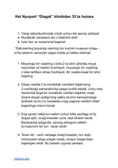

DKKel Nyuportning "Diqqat" kitobidan eng muhim 35 ta amaliy xulosa va tavsiyalar.
Ushbu qo'llanma Kel Nyuportning mashhur "Diqqat" (Deep Work) kitobidan olingan eng muhim 35 ta xulosani o'z ichiga oladi. Unda teran ishlash, diqqatni jamlash, chalg'ituvchi omillardan xoli bo'lish va vaqtdan unumli foydalanish bo'yicha amaliy tavsiyalar berilgan.